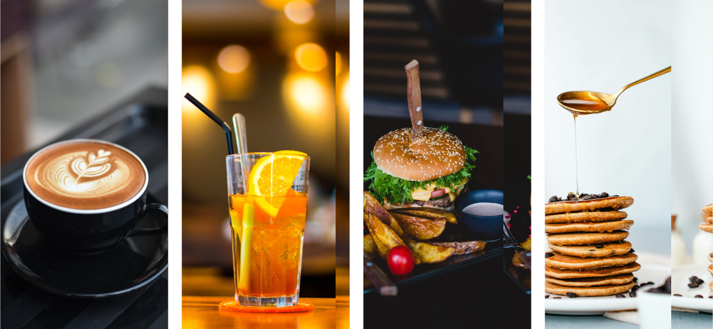

Welcome to DeCafe!


Open Everyday 7 am - 8 pm
We are All About
DeCafe began its journey in October 2010, opening its doors as a medium neighbourhood cafe in Manchester. Over the past decade, we have grown into a local favourite, known for our welcoming atmosphere, delicious dishes, great coffee, and excellent service

Our Menus
Our cafe combines the modern spirit of the city with the warmth of hospitality, creating a unique atmosphere for each guest
Our Blog
A collection of our blog about the DeCafe experience. Stay up-to date with new menu specials, events, functions, special diary dates